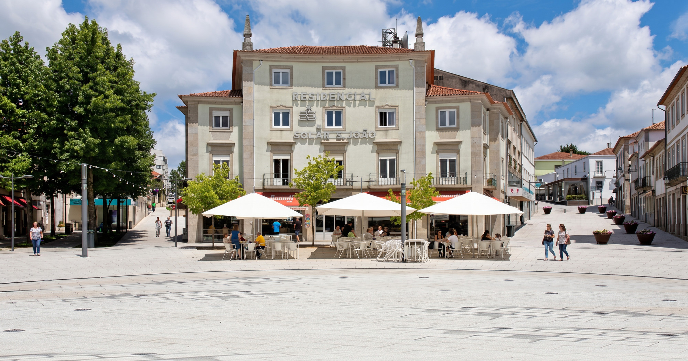
Solar São João
Casa de hóspedes na praça · São João da Madeira
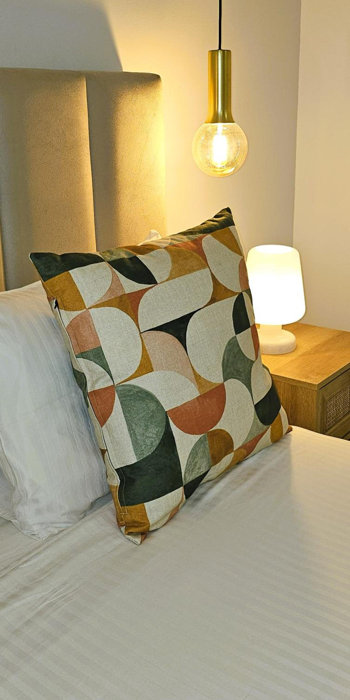
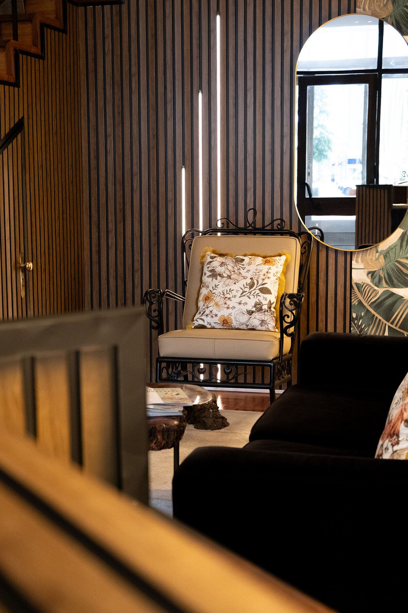
Na praça central de São João da Madeira, uma casa de hóspedes que recebe desde 1985 e tem vindo a ser renovada, quarto a quarto.
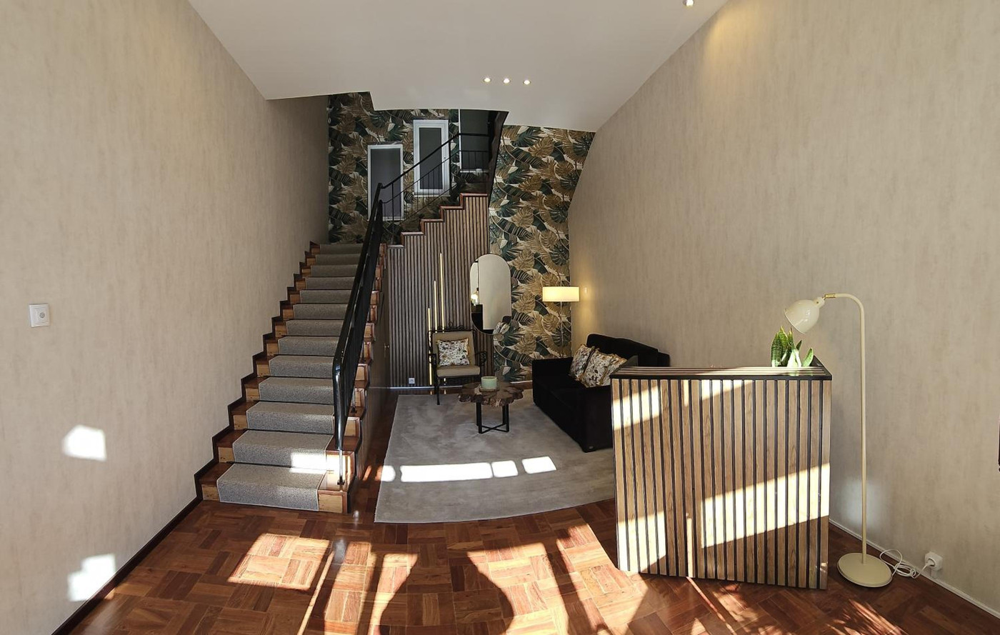
A entrada
Da praça, entra-se numa sala alta, com a escadaria ao fundo.
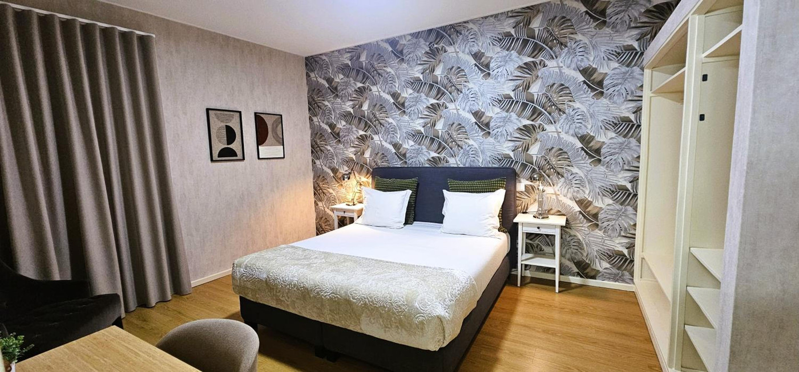
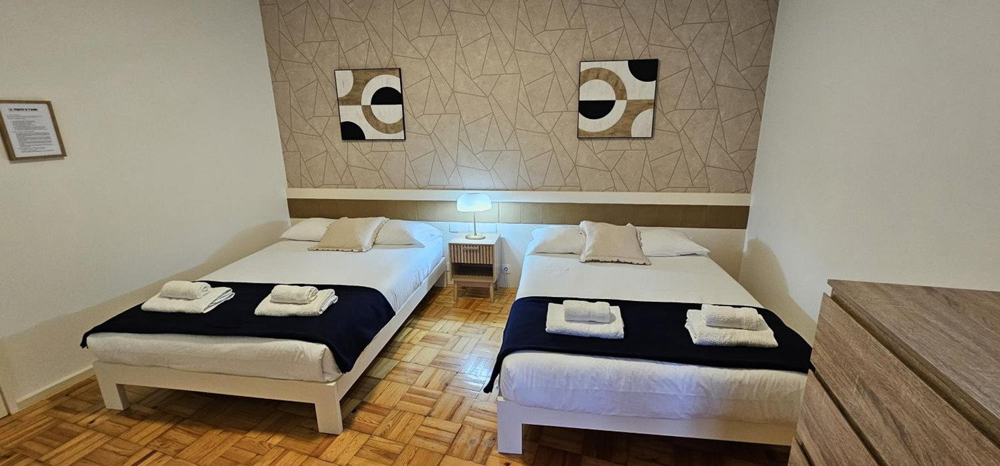
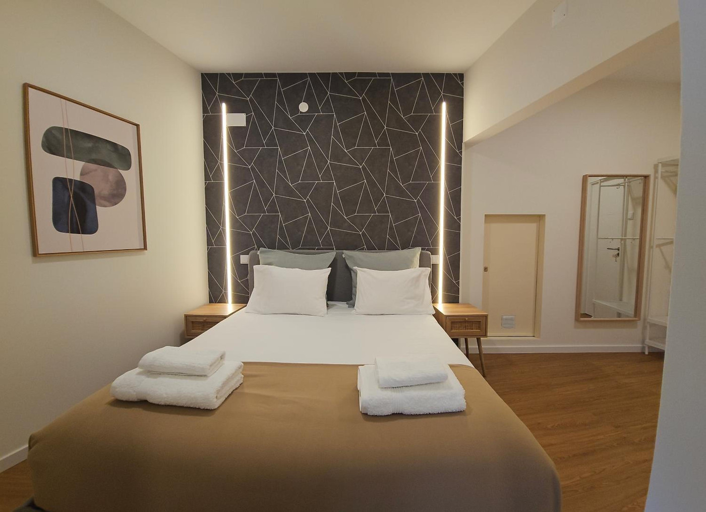
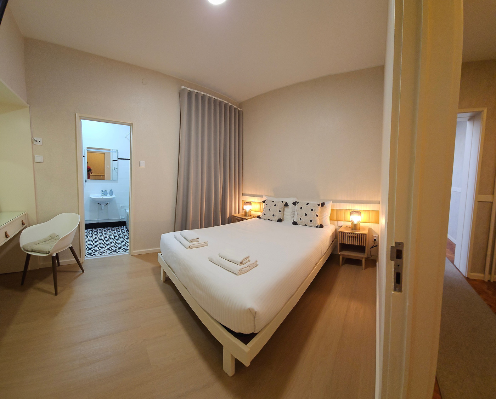
Quartos
Suitedupla
Quartofamiliar
Quartoduplo
Espaços comuns
-
Sala comum Sofá e poltrona
-
Sala comum A escadaria, vista da sala
-
Sala comum A mesa de tronco
-
Escadaria Os degraus
-
Escadaria O corrimão
-
Escadaria Vista de cima
-
Cozinha partilhada A cozinha
-
Cozinha partilhada A bancada
-
Cozinha partilhada Junto à janela
-
Cozinha partilhada A ilha
-
Cozinha partilhada Na mesa
Comodidades
- Wi-Fi gratuitoEm toda a casa
- Cozinha partilhadaEquipada, para os hóspedes
- Sala comumAo pé da escadaria
- Casa de banho privativaNa maioria dos quartos
- Ar condicionadoNas suites maiores e nos quartos familiares
- TelevisãoEcrã plano, canais por satélite
- Roupa de cama e toalhasCom produtos de higiene
- Secador de cabeloNa casa de banho
- Lavar e secar roupaMáquinas na casa
- Transfer do aeroportoCom custo adicional
- Animais de estimaçãoMediante pedido
- Quatro línguasPortuguês, inglês, espanhol e francês
- Casa sem fumoEm todos os espaços
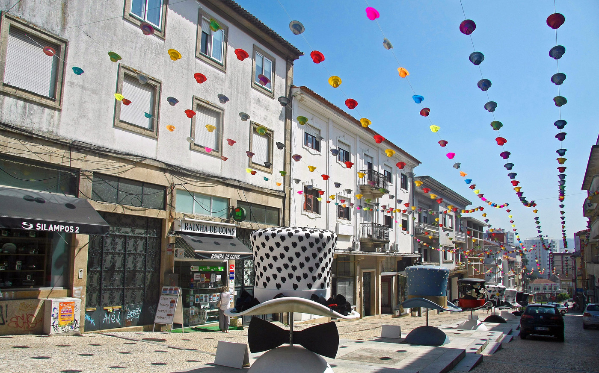
Na praça desde 1985.
A casa abriu ao público em 1985, no centro da cidade, e tem vindo a ser renovada, andar a andar e quarto a quarto.
Arredores
A cidade do chapéu e do calçado, entre o Porto e Aveiro.
-
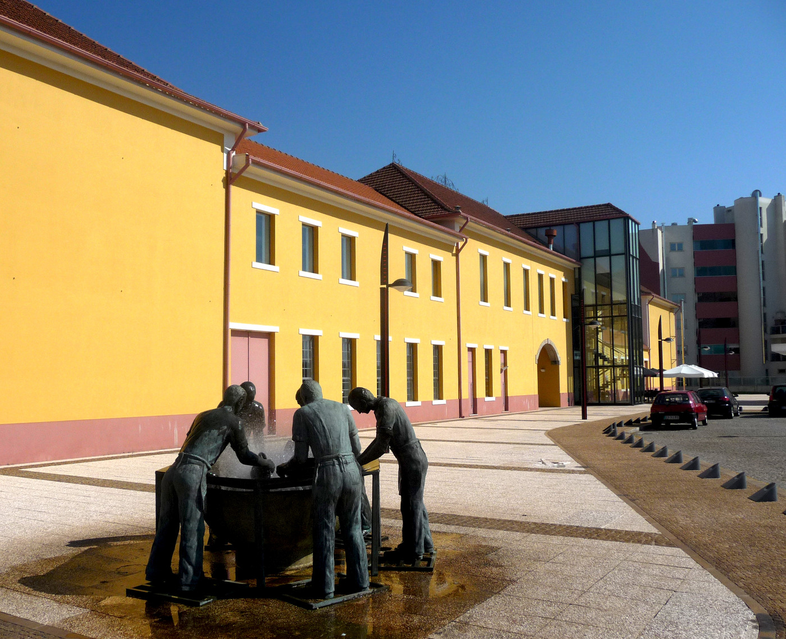
Museu da Chapelaria
Numa antiga fábrica de chapéus, a história da indústria que fez a cidade.
-
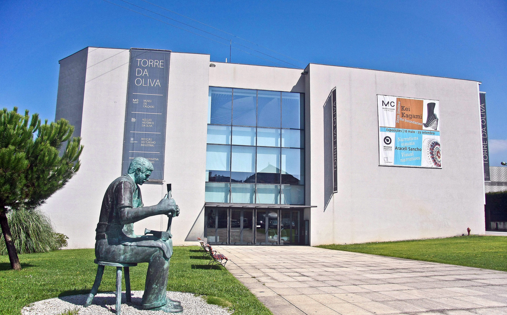
Torre da Oliva
Na antiga fábrica das máquinas de costura Oliva: arte, design e o Museu do Calçado.
-
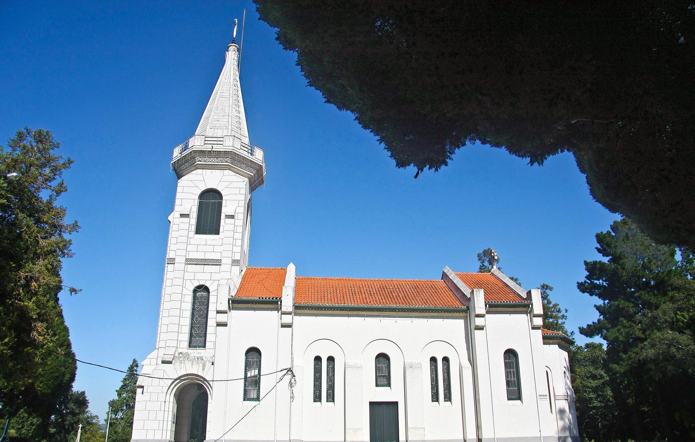
Parque de Nossa Senhora dos Milagres
Um parque arborizado à volta do santuário, para caminhar à sombra.
-
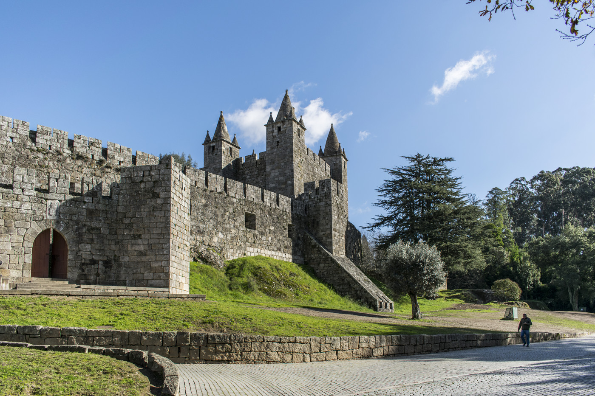
Castelo de Santa Maria da Feira
Um castelo medieval no alto de um monte; no verão, a Viagem Medieval.
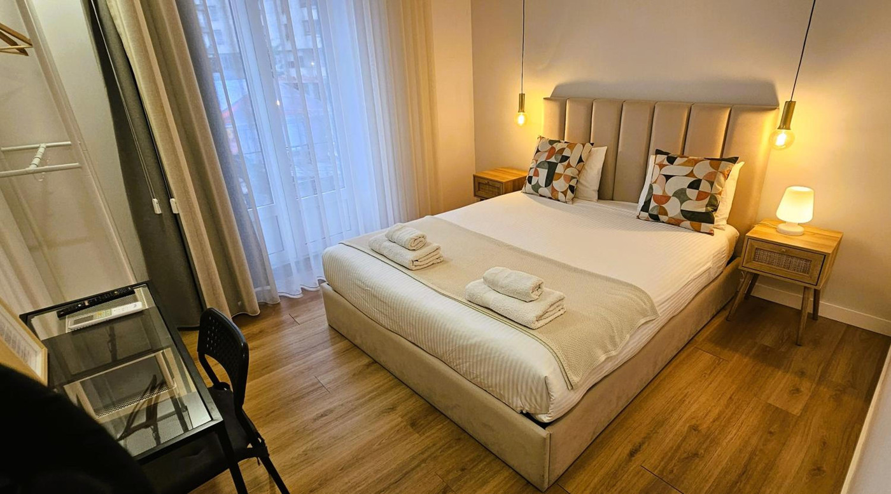
Venha visitar-nos
Na Praça Luís Ribeiro, no centro de São João da Madeira.